King's Grotto
Explore the massive underwater cave!
Take refuge from the intense summer sun and go for a swim in the cool waters.
Here a host of experiences await enthusiastic swimmers! Not only are there more 2nd and 3rd tier digging sites inside the Grotto, you can also collect more 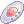 Summer Festival Coins by defeating various monsters.
There you may also come head to head with a long-time resident of the Grotto, namely the Pouring King, who will periodically seek revenge on behalf of exterminated Grotto Pourings. Join in on helping the server defeat the King and obtain some extra coin!
Once you have gathered some 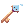 Pouring Key by playing other mini-games, use them to open Treasure Chests that are scattered across the map. Perhaps you will find some Deepwater Pearl and rare  Golden Pearl!
Golden Pearl!
But before you go exploring, don't forget to put on your 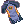 Wetsuit! It is a useful piece of equipment that will make your underwater journey more pleasant while you keep an eye out for Underwater Bubbles to keep yourself from drowning and terrifying underwater mines! (How did those get in the Grotto!?!?). To increase your resistance to all manner of underwater currents, talk with Diving Enthusiast to see what cool upgrades he has on offer!
Entering the cave
You can enter the King's Grotto by entering the portal located at the bottom right hand side of the Summer Festival map, Note that you will need to have a Wetsuit equipped in order to be allowed an entry.
You can also fall into the Grotto when digging on the island and selecting the "Dig deeper" option, Note if you do not have a wetsuit on when selecting "Dig deeper" you will run out of breath at a MUCH faster rate in the Grotto.
Diving Enthusiast
Players can speak with the Diving Enthusiast @navi summer02 107 102 to obtain a Wetsuit for 5 Summer Festival Coins.
Equipping a Wetsuit will allow players to enter and explore the King's Grotto, the Diving Enthusiast will also be able to upgrade a players wetsuit
with various items found inside of Grotto Chests.
You can alternatively use the Summer Tablet to purchase and upgrade your Wetsuit from anywhere.
Upgrading Your Wetsuit
The Diving Enthusiast is able to upgrade a players Wetsuit, each upgrade will give players added benefits while inside the King's Grotto.
Each upgrade costs 3 Deepwater Pearl and 100 Summer Festival Coins, Deepwater Pearl can be obtained from Grotto Treasure Chests, inside the Grotto.
If you fully enchant your Wetsuit with all 4 enchants you will gain the added benefit of having increased ASPD inside the King's Grotto.
Having a fully enchanted wetsuit will also result in the Diving Enthusiast now exchanging Deepwater Pearl for Summer Festival Coins at a 1 Pearl to 75 Festival Coins ratio.
| Wetsuit Enchants | |||
|---|---|---|---|
| Image | Name | Description | Price |
| 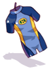 | Wetsuit | A skin-tight suit. It is surprisingly warm in cold weather!
|
5 Summer Festival Coins |
| 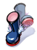 | 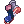 Dive Boots | Increase your walking speed inside the King's Grotto. | 100 Summer Festival Coins |
| 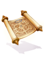 | 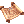 Waterproof Map | Gives you a mini-map of the King's Grotto and reveals hidden tunnels inside the Grotto. | 100 Summer Festival Coins |
| 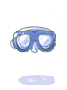 | Diving Goggles | Allows you to see hidden enemies inside the King's Grotto. | 100 Summer Festival Coins |
| 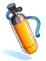 | 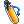 Air Tank | Increases the amount of time you can spend inside the King's Grotto without drowning. | 100 Summer Festival Coins |
See Also
| Summer Festival | ||
|---|---|---|
| General | Frying Dutchman • King's Grotto • Summer Concert • Hooligan • Summer Tablet • Festival Hat Recolors • Summer Shops | |
| Games | Multiplayer Games • Singleplayer Games • Arcade Games • Frenzy Mode | |
| Activities | Digging • Fishing Tournament • Summer Foraging • Summer Cooking | |